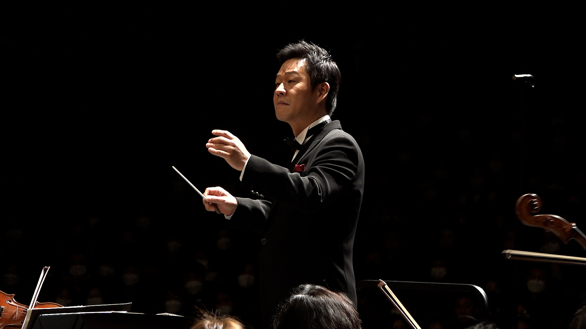

THE
SINCE 2021
BEETHOVEN
Symphony Series 1
Anyang Civic Orchestra 3rd Regular Concert

안양시민오케스트라
지휘자 강인모
소프라노 허은주
테너 손민호
2023. 05. 20. SAT 05.00PM
평촌아트홀
본 공연은 2023 공연장 대관료 지원사업에 선정되어 제작된 공연입니다.
주관
KM예술기획
후원
동우아이텍 노블심포니오케스트라 The H Muzik J-String KM예술기획
티켓
전석 1만원
문의
010-4586-5170
PROGRAM
F. Kuhlau
(1786-1832)
Trio in F Major, Op. 13,No.3
I. Allegro
II. Adagio
III. Minuetto
C. Cui
(1835-1918)
5 Pieces Duios for Two Flutes
and Piano, Op. 56
I. Badinage
II. Berceuse
III. Scherzino
IV. Nocturne
V. Valse
C. McMichael
(b. 1954)
Floris for Flute Quartet
and Piano
I. Trillium
II. Baby's Breath Toddle
III. Lily Pond
IV. Calla
V. Snowdrops
INTERMISSION
L. Zempleni
(b. 1947)
Trio for Three Flutes
I. Allegro
II. Adagio
III. Vivace
G. Schocker
(b. 1959)
Three Dances
for Two Flutes and Piano
I. Easy Going
II. Moody
III. Coffee Nerves, Prestissimo
R. Rodger
(1902-1979)
Selections
from The Sound of Music
I. Easy Going
II. Moody
III. Coffee Nerves, Prestissimo